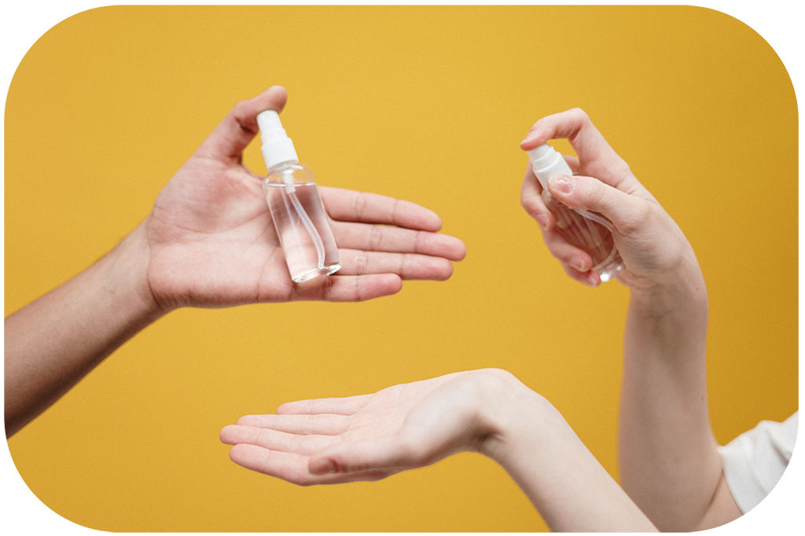
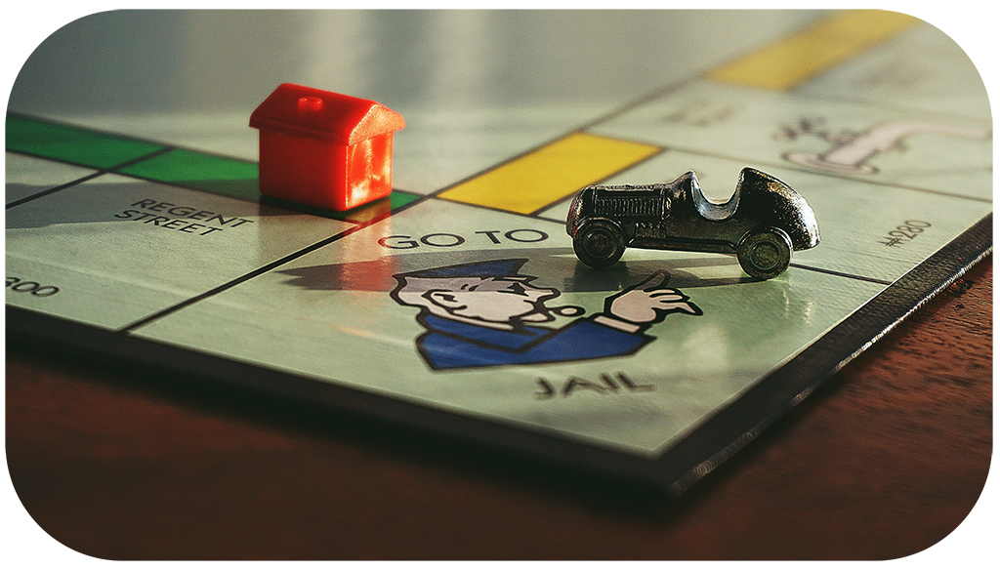

Hybrid Learning During COVID-19
Hybrid Learning has been introduced to several high schools across the country in hopes to minimize the infection rates of COVID-19. However, this new form of learning can be difficult to adjust to, particularly for young adolescents.
Here are some ways to ensure you’re performing at your best and staying safe:
Keeping Yourself Healthy

Practice safe distancing.
Ensure to keep at a safe distance from others in the school, both peers and teachers.Wear a mask.
This is one of the most important guidelines when it comes to keeping yourself and other safe from the virus.Carry hand sanitizer with you.
When touching doors, using washrooms or sharing items in school, carrying hand sanitizer with you can prevent the spread of germs.Stay home if you are sick.
This should be self explanatory, make sure if you are exhibiting any symptoms of being ill, stay home.
Combatting Social Isolation

Spend quality time with family.
With parents working from home and students learning from home as well, there is more time for quality interaction with family. Set up a game night, or watch a movie with your family!Take a break from the news.
The news can be overwhelming and sometimes can disrupt our peace. Be sure to stay informed, but take breaks once in a while as needed to preserve your mental health.Make use of online platforms to stay in touch with friends.
Have virtual hangouts with friends through Skype or Zoom, and share pictures on social media of your daily life with close friends!